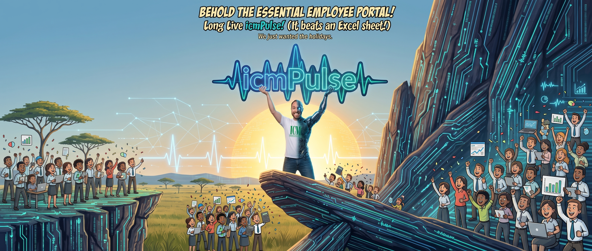
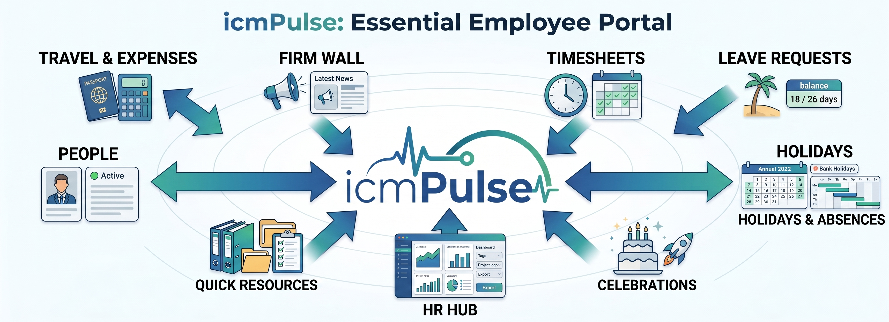

Woken up by a rooster crowing at 7 AM, you suddenly remember you were supposed to submit a leave request today — sound familiar?
Now you just need to dress up like Indiana Jones, boot up your computer, and set off on an expedition to find the right Excel spreadsheet with the current request template. The one that isn't "leave_form_FINAL_v3_reallyfinal.xlsx" from 2023. The one your manager will actually accept without asking "wait, is this the right version?"
You finally find it. You fill it in. You email it to HR, CC your manager, CC yourself just in case, and pray to the productivity gods that nobody replies-all with "please use the new template" three minutes later.
But even if you win that battle — the war isn't over. What if someone in your team has already booked the exact same slot? How many days of paid leave do you even have left this year? Is that number in your head accurate, or is it wishful thinking left over from January?
We're a company of 30 people, not 3,000 — we shouldn't need a spreadsheet archaeology degree just to take a Friday off.
Out of precisely these small, daily absurdities came the idea for icmPulse (or simply Pulse).
Track & Album Reference (Click to Expand)
Song Title: "Wanna Be Startin' Somethin'"
Album: Thriller (1982)
Why this track? Exactly what a Monday morning without Pulse sounds like — chaos, rumors about who's on leave, and everybody startin' somethin'.


Behold the essential employee portal! Long live icmPulse! (It beats an Excel sheet!)